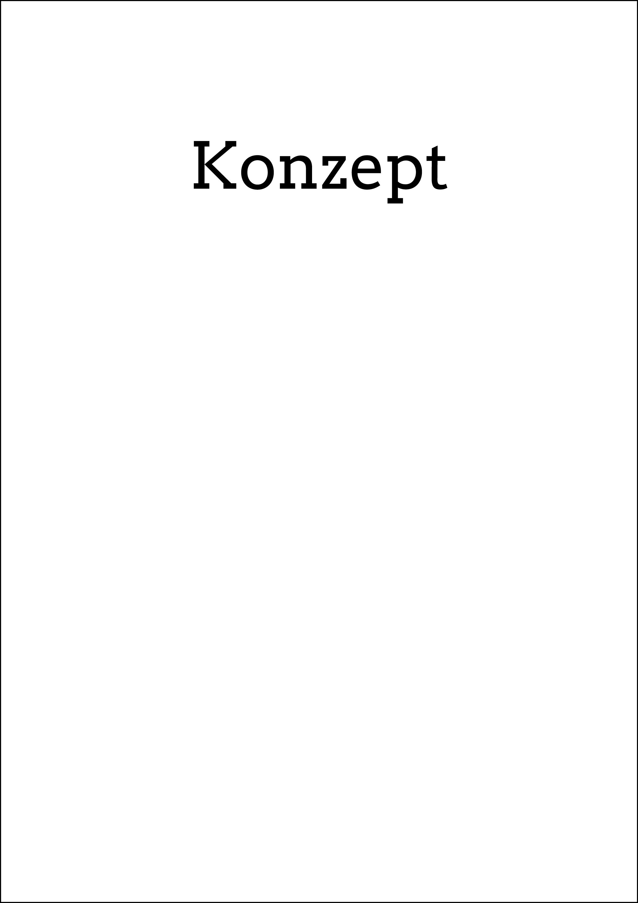
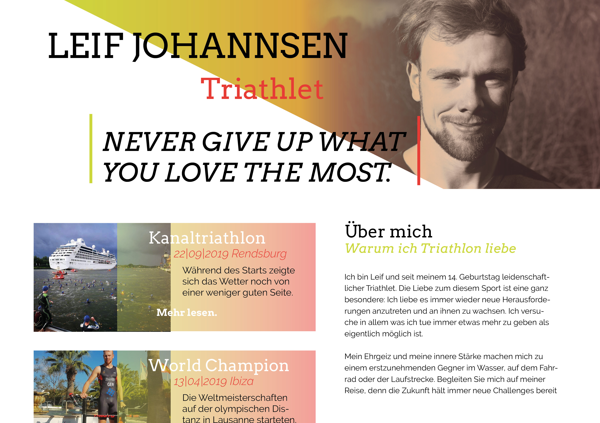
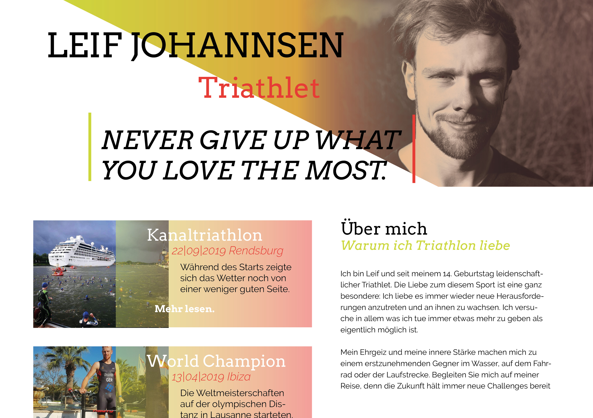
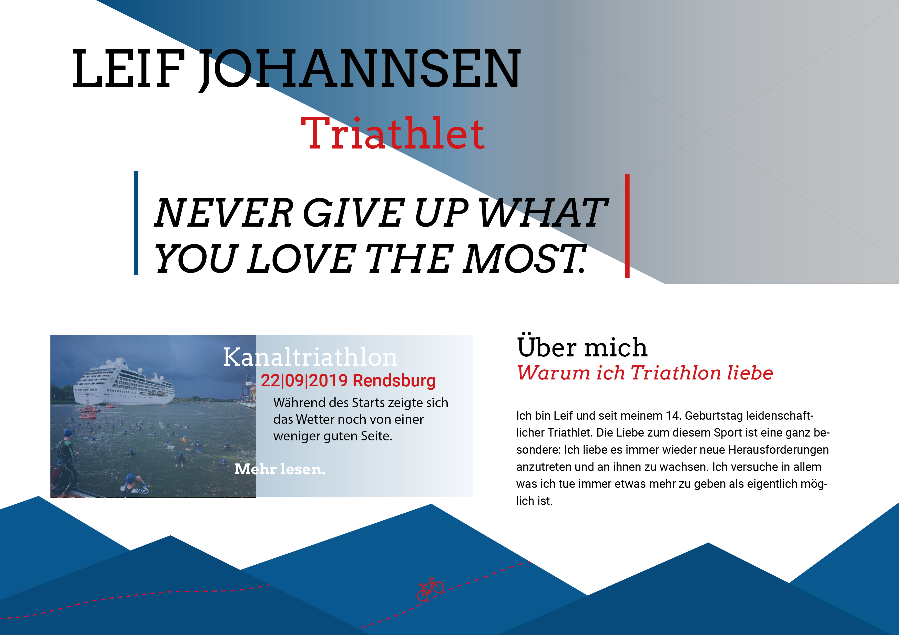
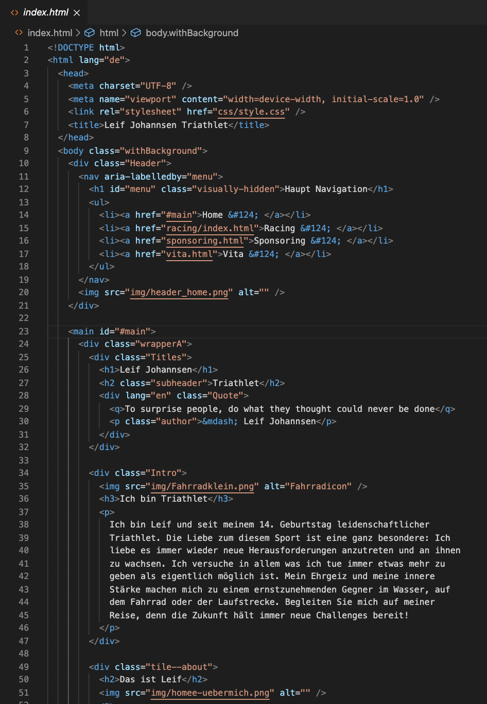
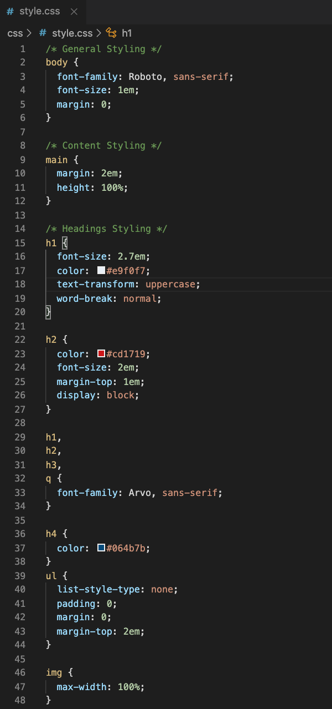
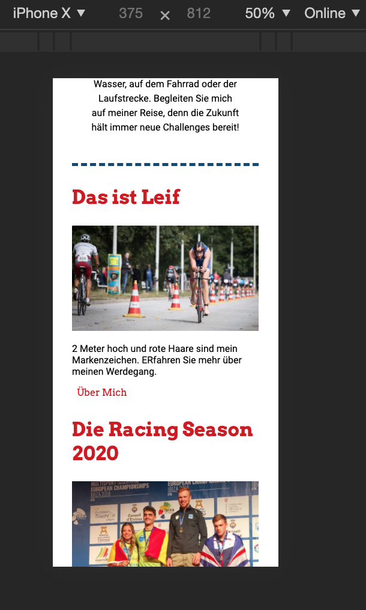
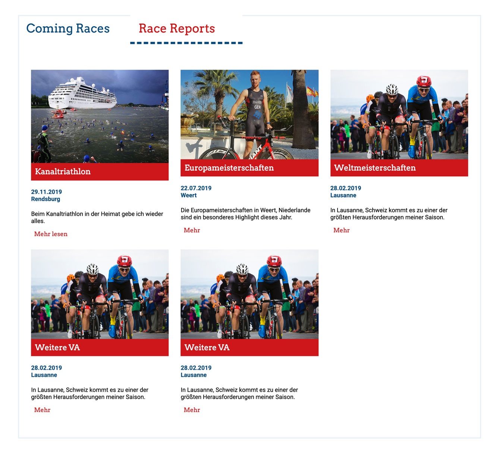

Finales Ergebnis
June 17
10. Mai
Die Website zur Hausarbeit 2020 im Fach Frontend Design wird eine Sponsoring und Portfolio Seite sein. Es soll Triathlet und Sportler Leif Johannsen vorgestellt werden und ein Überblick über Leistungen und Rennen gegeben werden. Dabei liegt der Fokus auf einer emotionalen Darstellung mit dem Ziel mögliche Sponsoren zu werben. Somit wird also die Person, der Sportler “vermarktet”.
 Konzept Frontend25. Mai
Wir haben drei Styletiles erstellt, die sich vom Design jeweils unterscheiden. Uns war es wichtig eine dynamische Atmosphäre zu schaffen und harmonierende Farben miteinander zu kombinieren.
 


29. Mai
Entschieden haben wir uns die Elemente aus dem ersten und zweiten Styletile zu kombinieren. Dabei haben wir die Farbverläufe und die Schriftarten zusammengefügt. Ebenfalls haben wir eine kombination zwischen Header und Footer geschaffen. Die Formsprache des Footers wurde durch ekige Kanten ersetzt.
30. Mai
Zu beginn haben wir in der HTML Bilder, Headings und passende Absätze eingefügt und erste Modulelemente erstellt. Danach war es wichtig eine grundsätzliche Struktur in der HTML zu erzielen, womit uns das arbeiten im CSS erleichtert wird.
 HTML Aufbau3. Juni
Die Modulseite enthält verschiedene Modulelemente, unter anderem für den Headerbereich der Seite, Überschriften, Quotes, eine Vorschaukachel, einen Artikel, eine Liste, einen Link und den Footer.
ModulseiteJune 4
Nachdem das Design feststand und die HTML strukturiert war haben wir erste Designelemente wie Header, Schriftfarben und Schriftgrößen in CSS umgesetzt.
 Erstes CSSJune 7
Unsere Detailseiten Coming Races und Race Reports befinden sich innerhalb des Tabmodules unter dem Navigationspunkt Racing.

 Detailseiten
Detailseiten
June 10
Unsere Media Queries sind in 450px, 600px, 700px, 800px, 900px und 1350px unterteilt.
 Media QueriesJune 14
Ab 800px beginnt das Grid Layout. Dabei haben wir mit einem sechs spaltigen grid-template-areas gearbeitet.
 Grid
Grid
June 17